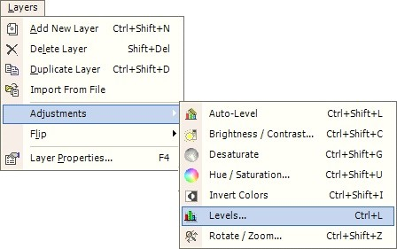
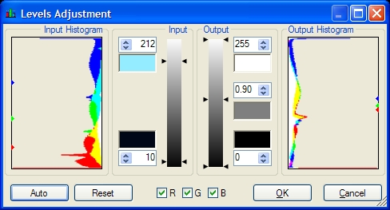
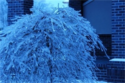
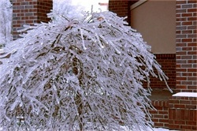

Levels
|
 The Color Levels of an image may be adjusted using Layers --> Adjustments --> Levels. This operation is used to adjust the color range and gamma of an image.This adjustment is useful for images that are too dark or bright, or images with a strong color dominating the image. |
|
 Shown on the Left is the Levels dialog. The images below show the effect that these setting have on the image. The levels dialog allows you to very precisely adjust the colors of an image using a number of inputs. In this dialog, there are two graphs, one at the left and another at the right. These graphs show histograms indicating the portion of the image that contains a particular color value. The left histogram indicates the input image, the right histogram indicates the values that will result in the output image. In the dialog pictured, the input histogram indicates that much of the image has red values that are low. In fact, almost none of the image has red values beyond half intensity (128). The part of the graph that shows the blue curve, on the other hand, indicates that most of the image has blue values above half intensity. Finally, the green values seem to be centered on middle-intensity values. After the settings have been adjusted--as seen in the output histogram--the colors are all centered on middle-intensity values, without excessive blue or insufficient red. This setting is obtained by adjusting the levels parameters. In the 'Input' frame, there are two text boxes, two color swatches, and a gradient slider. The top textbox, top color swatch, and top tick mark on the slider all indicate the input white point of the image. Colors brighter than the selected input white point will be considered 'white', and will be remapped to the output white point. The corresponding controls on the bottom of this frame indicate the input black point. Values darker than this will be considered to be equal to black, and will be remapped to the output black point. All of these settings can be adjusted by dragging the slider, adjusting the textboxes, or double-clicking on the color swatches. In the 'Output' frame, we see similar controls as the 'Input' frame, with the addition of another set. The middle controls, as seen in the pictured dialog, indicate the average color of the image, or grey-point. This adjustment is modified by applying a 'gamma' to the image (gamma, or ?, simply raises the color to a power, a gamma of 2 will remap 50% to 25%, a value of 0.5 will map 50% to 71%). A numerically higher value will result in a darker image, and a numerically low value will result in a brighter image. As with the other parameters, it can be adjusted by using the slider, the double-clicking the color swatch, or adjusting the value in the textbox. All adjustments in the output frame will yield a preview output histogram, as well as a preview of the working image. To reset to non-modifying values, click the 'Reset' button. To automatically set the values, click 'Auto'. 'Auto' picks up the nearly-brightest spot of the image for the white point (99.5th percentile), and the nearly-darkest spot for the black point (0.5th percentile). The output white point is set to white, the output black point is set to black, and the output grey point is set to 50% grey. For more accurate control of the color mapping, individual channels may be selected for individual adjustment. |
 
Original Image
After Adjustment